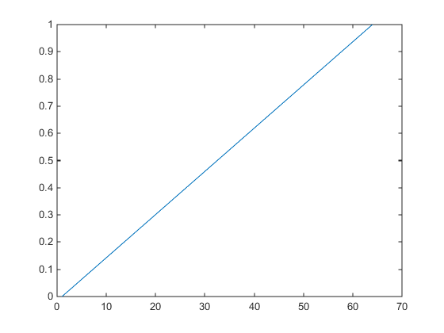
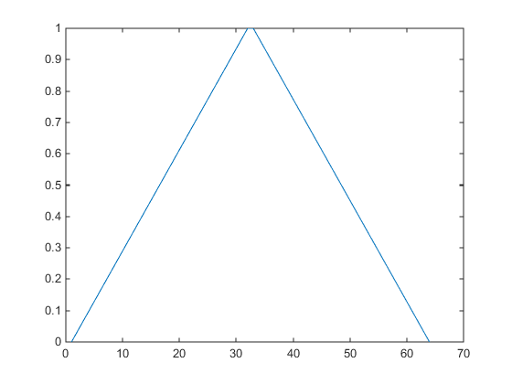
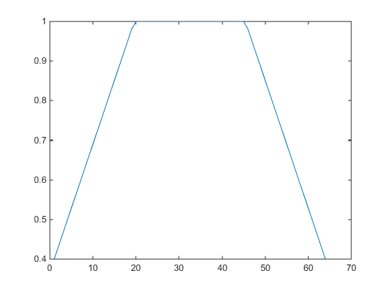
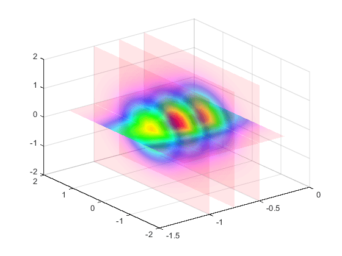

Modify the Alphamap
Every figure has an associated alphamap, which is a vector of values ranging from 0 to
1. The default alphamap contains 64 values ranging linearly from 0 to 1. View or modify
the alphamap using the Alphamap property of the
figure or using the alphamap function.
Default Alpha Map
The default alphamap contains 64 values ranging linearly from 0 to 1, as shown in the following plot.
am = get(gcf,'Alphamap'); plot(am)

This alphamap displays the lowest alpha data values as completely transparent and the highest alpha data values as opaque.
The alphamap function creates some
useful predefined alphamaps and also enables you to modify existing maps. For
example,
figure;
alphamap('vup')
sets the figure Alphamap property to an alphamap whose values
increase then decrease:
am = get(gcf,'Alphamap');
plot(am)

You can shift the values using the increase or
decrease options. For example,
alphamap('increase',.4)
adds the value .4 to all values in the current figure's alphamap. Replotting the
'vup' alphamap illustrates the change. The values are clamped
to the range [0 1].
am = get(gcf,'Alphamap'); plot(am)

Example — Modifying the Alphamap
This example uses slice planes to examine volume data. The slice planes use the color data for alpha data and employ a rampdown alphamap (the values range from 1 to 0):
Create the volume data by evaluating a function of three variables.
[x,y,z] = meshgrid(-1.25:.1:-.25,-2:.2:2,-2:.1:2); v = x.*exp(-x.^2-y.^2-z.^2);
Create the slice planes, set the alpha data equal to the color data, and specify interpolated
FaceColorandFaceAlpha.h = slice(x,y,z,v,[-1 -.75 -.5],[],[0]); set(h,'EdgeColor','none',... 'FaceColor','interp',... 'FaceAlpha','interp') alpha('color')Install the rampdown alphamap and increase each value in the alphamap by .1 to achieve the desired degree of transparency. Specify the
hsvcolormap.alphamap('rampdown') alphamap('increase',.1) colormap hsv
This alphamap displays the smallest values of the function (around zero) with the least transparency and the greatest values display with the most transparency. This enables you to see through the slice planes, while at the same time preserving the data around zero.
